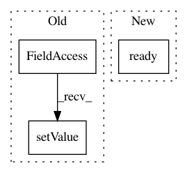

ee25b15fcf426d05f730d0a025c752fe92d10873,ilastik/applets/wsdt/wsdtGui.py,WsdtGui,configure_gui_from_operator,#WsdtGui#,191
Before Change
return False
with self.set_updating():
op = self.topLevelOperatorView
self.channel_box.setValue( op.ChannelSelection.value )
input_layer = self.getLayerByName("Input")
if input_layer:
input_layer.channel = op.ChannelSelection.value
After Change
self.preserve_pmaps_box.setChecked( op.PreserveMembranePmaps.value )
self.enable_debug_box.setChecked( op.EnableDebugOutputs.value )
self.update_ws_button.setEnabled( op.Superpixels.ready() )
def configure_operator_from_gui(self):
if self._currently_updating:
In pattern: SUPERPATTERN
Frequency: 3
Non-data size: 3
Instances
Project Name: ilastik/ilastik
Commit Name: ee25b15fcf426d05f730d0a025c752fe92d10873
Time: 2017-02-21
Author: bergs@janelia.hhmi.org
File Name: ilastik/applets/wsdt/wsdtGui.py
Class Name: WsdtGui
Method Name: configure_gui_from_operator
Project Name: ilastik/ilastik
Commit Name: 7c408ad993e215227823fc1f7fc64b8737782b5d
Time: 2017-03-07
Author: dominik.kutra@gmail.com
File Name: lazyflow/operators/ioOperators/opNpyFileReader.py
Class Name: OpNpyFileReader
Method Name: setupOutputs
Project Name: ilastik/ilastik
Commit Name: 864483bdbab5c6546ec40f70dfce7eb22ce49454
Time: 2018-11-02
Author: adrian.wolny@iwr.uni-heidelberg.de
File Name: ilastik/applets/tracking/base/trackingBaseDataExportApplet.py
Class Name: TrackingBaseDataExportApplet
Method Name: _configure_operator_with_parsed_args